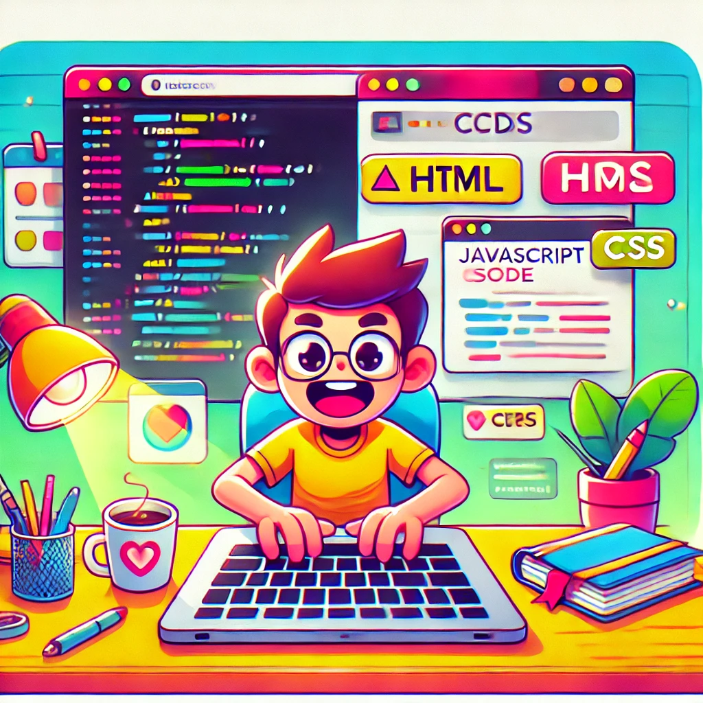

If you're interested in hearing about the things I find awesome (& maybe learning a bit about them) you're in the right place! If not...look a cute frog!
AI can use computers now? Claude breaks the 4th wall!
November 1, 2024
AI generated using DALL-E
Last week, Anthropic announced their new upgraded Claude 3.5 Sonnet model, now able to actually use your computer! But what does this mean? What are the implications? Am I going to lose my job if AI can just do all of my coding and typing (and Googling ofc) for me?
Coding a personal website (I know, meta right)
October 22, 2024

AI generated using DALL-E
Coding and publishing my own website using GitHub pages! Yes, it's this one that you're on right now :)
What makes AI an agent?
October 18, 2024
AI generated using DALL-E
We've all heard the buzzword "agentic" or "agent" being thrown around, but what exactly is or isn't an agent? I've been doing my fair share of reading papers, listening to podcasts, and just being around a bunch of AI lovers at school...so let's break down some of the main themes I've been hearing!
What makes AI an agent?
October 18, 2024
In recent years, AI has evolved from being a tool that follows pre-programmed rules to becoming more agentic, meaning that it can take actions independently to achieve specific goals. But what exactly makes an AI agentic? Let’s explore the key components.
Autonomy: At its core, an agentic AI can operate with minimal human intervention. Instead of waiting for a command, it can make decisions based on its environment, goals, and inputs. For example, a self-driving car continuously makes choices about speed, direction, and safety, all autonomously.
Goal-Directed Behavior: Agentic AI systems are designed to pursue specific objectives. This could be something as simple as optimizing a search result, or as complex as managing a smart home system. Their actions are aligned with achieving these defined goals efficiently.
Adaptability: An agentic AI isn’t rigid. It learns and adapts based on new information and changes in its environment. Through reinforcement learning and other techniques, it can update its strategies to better reach its objectives, much like how humans learn from experience.
Decision-Making Abilities: Critical to being agentic is the ability to make informed decisions. This involves evaluating possible actions, predicting outcomes, and selecting the most effective course of action. For example, a virtual assistant can assess user preferences, predict needs, and proactively suggest solutions.
Interaction with the Environment: To be agentic, an AI must interact with its environment in meaningful ways. This could be through sensors, data inputs, or even engaging with other AI systems. It processes real-time information and responds accordingly, much like a human agent.
In summary, an agentic AI combines autonomy, goal-oriented behavior, adaptability, decision-making, and environmental interaction. This shift towards more self-sufficient AI systems is paving the way for innovations across industries, from healthcare to autonomous systems.
Coding a personal website (I know, meta right)
October 22, 2024
AI can use computers now? Claude breaks the 4th wall!
November 1, 2024
Last week, on October 22nd, Anthropic unveiled updates to their Claude 3.5 Sonnet model in a blog post, revealing alongside general improvements the shocking new feature: computer use.
How does it work?
So, how does a large language model go about actually using a computer? Well, the answer might be simpler than you might expect. Today's trend of AI development has increasingly steered towards developing "agentic" AI (which I gave my thoughts on in an earlier post!). These models are trained to utilize tools the user provides, such as calculators or even surfing the internet. So, theoretically we can just show the AI model our screen then give it control of the mouse and keyboard as a "tool"! Easy, right?
Actually, yes...
In essence, to control the computer, Claude is provided screenshots of what is visible to the user, then is able to calculate how many pixels to move the cursor (horizontally and vertically) in order to reach a certain goal. Combined with its ability to reason and plan, the model can now actually execute its own plans!
For example, if I prompted Claude to "Develop a simple web app that is a to do list which I can check off items, then launch it on a local server. Test the app for functionality, and use the internet to research how to do anything you don't understand," it might go through the following steps:
Navigate the cursor to the VSCode logo and open the editor
Start typing code in the editor
Launch a simple Python server in the terminal
Open a browser to check results
Realize the checklist doesn't properly show checked items
Open a tab and find code for a checkbox on Stack Overflow
Fix the code in the editor
Test the now working app by moving the cursor and clicking/unclicking the items
Before, LLMs could only provide you with responses, leaving you to plug in the code or look up the recommendation and implement it on your own (with the exception of actually using APIs and chaining together various tools, which is restricted to the more savvy users amongst us). However, this new feature bridges that gap, allowing the model not only to execute code, but manipulate your computer and actually use the tools we give it!
Why is this cool?
Now, you might be thinking, wouldn't it be faster just to perform all of those tasks on my own? Why would I want to wait for the model to slowly move my cursor around, when I could have just coded up the app and deployed it faster with my experience? Well, I would agree with you for the most part. However, many users that don't have coding background might not have as easy a time as you or I presumably! This direction of research truly shows promise in making the world of technology more accessible in my opinion.
Say you are new to AI and coding in general, but have heard of all this AI hype and want to give some great app ideas you have a shot! Maybe a mom who wants an app to keep track of her family recipes, but isn't quite comfortable sharing them with an app someone else made? With this type of AI agent at her side, she could explain her idea to the model